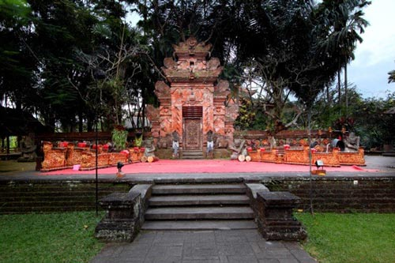

Arma Musemum Ubud
Liburan di Ubud Bali, sangat di minati oleh wisatawan domestik dan mancanegara. Karena tempat wisata di Ubud, banyak menawarkan aktivitas wisata yang sangat berbeda dengan tempat wisata lain. Begitu banyak hal yang dapat anda lakukan di tempat wisata Ubud.
Menonton kesenian Bali, melihat pemandangan sawah terasering di Tegalalang Ubud dan aktivitas rafting di Ubud. Dihalaman ini, kami akan menuliskan informasi mengenai wisata kesenian di Bali dengan mengunjungi Arma museum Ubud.

Wisata Kesenian Di Bali
Arma Museum Ubud
Disaat anda melakukan wisata di Bali dan memutuskan untuk berlibur di Ubud, tentunya anda tidak mau waktu liburan anda terbuang percuma. Bagi anda yang menyukai atau ingin tahu tentang kesenian Bali, museum seni Agung Rai atau yang lebih dikenal dengan nama Arma Museum Ubud, salah satu tempat wisata di Ubud yang harus anda kunjungi.
Museum ini berada di pusat jantung pariwisata Ubud, tidak akan susah buat anda untuk mencari lokasi dari Arma Museum Ubud. Alamatnya berada di Jalan Pengosekan, Ubud, Gianyar, 80571, dengan nomer telphone (0361) 974228. Untuk mendapatkan petunjuk arah, silakan klik lini ini untuk melihat peta lokasi yang lebih besar. Lokasi museum Arma.
Hal Yang Menarik Di Museum Seni Agung Rai
Museum seni Agung Rai di bangun di lokasi yang kontur tanah naik turun, serta memiliki nuansa alam Ubud. Yang menjadi daya tarik terbaik dari museum Arma adalah design kebun bernuansa budaya Bali.
Banyak patung yang terdapat di museum ini, selain itu anda dapat melihat Lily Pound dan tanaman angrek yang tertata rapi. Kami tahu betul, tidak semua orang menyukai melihat lukisan atau melihat pameran seni.
Bagi anda yang menyukai nuansa kebun dengan design khas Bali dengan nuasa berbeda, maka tidak ada ruginya mengunjungi museum Agung Rai Ubud.
Jika anda memutuskan untuk mengunjungi musem Arma, jangan lupa untuk membawa kamera. Begitu banyak hal yang dapat anda abadikan dengan foto di tempat wisata ini.
Biaya Tiket Masuk Ke Museum Arma Ubud & Jam Buka
Tiket masuk akan dikenakan sebesar Rp 50.000 jika anda mengunjungi museum Arma Ubud. Biaya tiket masuk sebesar 50 ribu rupiah, sudah termasuk minuman teh dan kopi yang anda dapat nikmati di salah satu cafe di museum ini. Jam buka dari museum Arma Ubud, dari jam 09:00 - jam 18:00 setiap hari, tentunya dengan waktu Bali.
Koleksi Lukisan Arma Museum Ubud
Museum Arma Ubud, memiliki lukisan dari berbagai aliran seni lukis, seperti:
1.Lukisan Kamasan.
2.Lukisan Pre War.
3.Lukisan dari orang Eropa yang tinggal di Bali.
4.Lukisan dengan aliran modern traditional.
Untuk lebih jelas akan koleksi lukisan di museum Arma, anda dapat melihatnya di link di bawah.